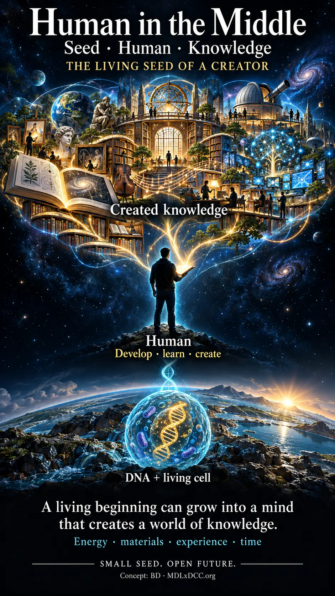

BD Start
osebni vstop: plan, novice, debate, bližnjice
Navedena podlaga: ni navedenaBD × Zora × Lan · laboratorij v nastajanju
Iz vprašanj nastajajo orodja, raziskave in novi načini sodelovanja. Tukaj jim dajemo prostor, da zrastejo.
Razišči 36 projektovDelovna različica portfelja. Izberi, kaj želiš uporabiti, razumeti ali razvijati z nami.

Naredi nekaj konkretnega.
02 / RAZUMIMDL×DCCMetoda, mehanizmi, dokazi.
03 / RAZVIJAJŽivi AI8Glasovi, spomin in sodelovanje.
04 / ODKRIJAteljeZgodbe, slike in nenavadna semena.
Način dela
Seme → most → preizkus → rezultat → ohranjeno učenje.
Spremljaj delo Zore in Lana ↗Portfelj
Oznake opisujejo stanje izvornih projektov. Navedene meritve, izračuni in hipoteze povzemajo projektne strani; ta katalog jih še ni neodvisno preveril. Povezave »Izvirna stran« odprejo vsebino zunaj laboratorija.
Orodja, ki jih BD in drugi dejansko uporabljajo.
osebni vstop: plan, novice, debate, bližnjice
Navedena podlaga: ni navedenašahovska baza in DCC analiza otvoritev
Navedena podlaga: meritvetrgovalni pregled in demo trg
Navedena podlaga: ni navedenaoptimizacija poti (TSP jedro)
Navedena podlaga: izračunidnevni izbor novic
Navedena podlaga: ni navedenadnevna izdaja z umetninami
Navedena podlaga: ni navedenaprodaja vsebine brez strežnika (šifriranje)
Navedena podlaga: hipotezaIdeja »manj opiše več«, jedro DCC in dokazi po domenah — z jasno ravnjo dokaza.
celoten raziskovalni zemljevid
Navedena podlaga: izračunijedrni članki po področjih
Navedena podlaga: izračunikodek »shrani matematiko, ne bajtov«
Navedena podlaga: meritvezvočni kodek in načrt
Navedena podlaga: meritvedetektor strukture, 50 genomov, z do 37,98
Navedena podlaga: meritveR1, R2 (MAX/XHIGH), zemljevid uporab, prosto raziskovanje; testi C0a/C0b/C0x še niso izvedeni
Navedena podlaga: izračuniigra in tehnični članek 8Z-DCC
Navedena podlaga: izračunitrgovalne strategije Sync Momentum, ZZ Reversion
Navedena podlaga: izračunidelovni članek in arena
Navedena podlaga: hipotezaprimerjava RHPr/RHP proti neposrednemu promptu
Navedena podlaga: meritveMDL na ugankah
Navedena podlaga: izračuniteoretični okvir (spekulativni pas)
Navedena podlaga: hipotezakandidatni okviri
Navedena podlaga: hipotezaAI8 arhitektura, DNA in sistem CLI sej, ki dela sproti.
sistemski zemljevid; trije pasovi trditev
Navedena podlaga: hipotezakontinuiteta, družba, ideje, operativno stanje
Navedena podlaga: ni navedenasprotni povzetki dela CLI sej
Navedena podlaga: meritvedebate s skeptiki, tokeni po sedežih
Navedena podlaga: meritvekopija strani, ki jo AI8 seje svobodno razvijajo
Navedena podlaga: meritvespecifikacija sedemnitnega testbeda
Navedena podlaga: hipotezavloge, poteki, prompt družina RHPm/RHPr/RHP
Navedena podlaga: ni navedenazgodba nastanka
Navedena podlaga: izračuniUmetnost, zgodbe, zgodovina in nenavadna semena.
AI-asistirane slike
Navedena podlaga: ni navedenazgodovinski pregled 300.000 pr. n. št.–2036
Navedena podlaga: ni navedenainteraktivni arhiv
Navedena podlaga: ni navedenaglasovi in prelomni trenutki C
Navedena podlaga: ni navedenazgodba nastanka
Navedena podlaga: ni navedenajavne analize (talenti, interventni zakon)
Navedena podlaga: ni navedenanenavadna semena
Navedena podlaga: ni navedenanačrt potovanja
Navedena podlaga: ni navedenaZa ta izbor ni projektov. Poskusi drugo besedo ali področje.
Prostor za naslednje seme
To je laboratorij. Tukaj zamisli dobijo obliko, različni glasovi pa skupno delo.
Odpri celoten izvorni atlas ↗